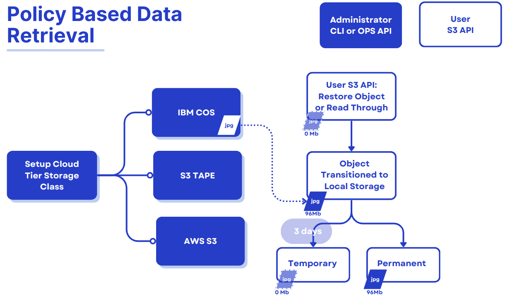

Ceph Object Storage Tiering Enhancements. Part Two
Introducing Policy-Based Data Retrieval for Ceph ¶
Note that as of the time of writing (mid-April 2025), this functionality may not yet be in a Ceph Squid release, but will appear in Tentacle and possibly a future Squid release.
Introduction and Feature Overview ¶
In the first part of this series, we explored the fundamentals of Ceph Object Storage and its policy-based archive to cloud/tape feature, which enables seamless data migration to remote S3-compatible storage classes. This feature is instrumental in offloading data to cost-efficient storage tiers, such as cloud or tape-based systems. However, in the past, the process has been unidirectional. Once objects are transitioned, retrieving them requires direct access to the cloud provider’s S3 endpoint. This limitation has introduced operational challenges, particularly when accessing archived or cold-tier data.
We are introducing policy-based data retrieval in the Ceph Object Storage ecosystem to address these gaps. This enhancement empowers administrators and operations teams to retrieve objects transitioned to cloud or tape tiers directly back into the Ceph cluster, aligning with operational efficiency and data accessibility needs.
Why This Matters ¶
Policy-based data retrieval transforms the usability of cloud-transitioned objects in Ceph. Whether the data resides in cost-efficient tape archives or high-latency/low-cost cloud tiers, this feature ensures that users can seamlessly access and manage their objects without relying on the external provider's S3 endpoints. This capability simplifies workflows and enhances compliance with operational policies and data lifecycle requirements.
Policy-Based Data Retrieval ¶
This new functionality offers a dual approach to retrieving transitioned objects to remote cloud/tape S3-compatible endpoints:
S3 RestoreObject API Implementation: Similar to the AWS S3
RestoreObjectAPI, this feature allows users to retrieve objects manually using the S3RestoreObjectAPI. The object restore operation can be permanent or temporary based on the retention period specified in theRestoreObjectAPI Call.Read-Through Mode: By introducing a configurable
--allow-read-throughcapability Ceph can serve read requests for transitioned objects in the cloud tier storage class configuration. Upon receiving aGETrequest, the system asynchronously retrieves the object from the cloud tier, stores it locally, and serves the data to the user. This eliminates theInvalidObjectStateerror previously encountered for cloud-transitioned objects.

S3 RestoreObject Temporary Restore ¶
The restored data is treated as temporary and will exist in the Ceph cluster only for the duration specified during the restore request. Once the specified period expires, the restored data will be deleted, and the object will revert to a stub, preserving metadata and cloud transition configurations.
Lifecycle Transition Rules Are Skipped ¶
During the temporary restore period, the object is exempted from lifecycle rules that might otherwise move it to a different tier or delete it. This ensures uninterrupted access until the expiry date.
Default Storage Class for Restored Data ¶
Restored objects are, by default, written to the STANDARD storage class within the Ceph cluster. However, for temporary objects, the x-amz-storage-class header will still return the original cloud-tier storage class This is in line with AWS Glacier semantics, where restored objects’ storage class remains the same.
S3 RestoreObject API walkthrough ¶
We are uploading an object called 2gb to the on-prem Ceph cluster using a bucket called databucket. In part one of this blog post series, we configured databucket with a lifecycle policy that will tier/archive data into IBM COS after 30 days. Wee set up the AWS CLI client with a profile called tiering to interact with Ceph Object Gateway S3 API endpoint.
aws --profile tiering --endpoint https://s3.cephlabs.com s3 cp 2gb s3://databucket upload: ./2gb to s3://databucket/2gb
We can check the size of the uploaded object in the STANDARD storage class within our on-prem Ceph cluster:
aws --profile tiering --endpoint https://s3.cephlabs.com s3api head-object --bucket databucket --key 2gb
{
"AcceptRanges": "bytes",
"LastModified": "2024-11-26T21:31:05+00:00",
"ContentLength": 2000000000,
"ETag": "\"b459c232bfa8e920971972d508d82443-60\"",
"ContentType": "binary/octet-stream",
"Metadata": {},
"PartsCount": 60
}
After 30 days, the lifecycle transition kicks in, and the object is transitioned to the cloud tier. First, as an admin, we check with the radosgw-admin command that lifecycle (LC) processing has completed, and then as a user, we use the S3 HeadObject API call to query the status of the object:
# radosgw-admin lc list| jq .[1]
{
"bucket": ":databucket:fcabdf4a-86f2-452f-a13f-e0902685c655.310403.1",
"shard": "lc.23",
"started": "Tue, 26 Nov 2024 21:32:15 GMT",
"status": "COMPLETE"
}
# aws --profile tiering --endpoint https://s3.cephlabs.com s3api head-object --bucket databucket --key 2gb
{
"AcceptRanges": "bytes",
"LastModified": "2024-11-26T21:32:48+00:00",
"ContentLength": 0,
"ETag": "\"b459c232bfa8e920971972d508d82443-60\"",
"ContentType": "binary/octet-stream",
"Metadata": {},
"StorageClass": "ibm-cos"
}
As an admin, we can use the radosgw-admin bucket stats command to check the space used. We can see that rgw.main is empty, and our rgw.cloudtiered placement is the only one with data stored.
# radosgw-admin bucket stats --bucket databucket | jq .usage
{
"rgw.main": {
"size": 0,
"size_actual": 0,
"size_utilized": 0,
"size_kb": 0,
"size_kb_actual": 0,
"size_kb_utilized": 0,
"num_objects": 0
},
"rgw.multimeta": {
"size": 0,
"size_actual": 0,
"size_utilized": 0,
"size_kb": 0,
"size_kb_actual": 0,
"size_kb_utilized": 0,
"num_objects": 0
},
"rgw.cloudtiered": {
"size": 1604857600,
"size_actual": 1604861952,
"size_utilized": 1604857600,
"size_kb": 1567244,
"size_kb_actual": 1567248,
"size_kb_utilized": 1567244,
"num_objects": 3
}
}
Now that the object has transitioned to our IBM COS Cloud tier let's restore it to our Ceph Cluster using the S3 RestoreObject API call. In this example, we'll request a temporary restore and set the expiration to three days:
# aws --profile tiering --endpoint https://s3.cephlabs.com s3api restore-object --bucket databucket --key 2gb --restore-request Days=3
If we attemp to get an object that is still being restored, we get an error message like this:
# aws --profile tiering --endpoint https://s3.cephlabs.com s3api get-object --bucket databucket --key 2gb /tmp/2gb
An error occurred (RequestTimeout) when calling the GetObject operation (reached max retries: 2): restore is still in progress
Using the S3 API, we can issue the HeadObject call and check the status of the Restore attribute. In this example, we can see how our restore from the IBM COS cloud endpoint to Ceph has finished, as ongoing request is set to false. We have an expiry date for the object, as we used the RestoreObject call with --restore-request days=3O. Other things to check from this output: the occupied size of the object on our local Ceph cluster is 2GB, as expected once it is restored. Also, the storage class is ibm-cos. As noted before for temporarily transitioned objects, even when using the STANDARD Ceph RGW storage class, we still keep the ibm-cos storage class. Now that the object has been restored, we can issue an S3 GET API call from the client to access the object.
# aws --profile tiering --endpoint https://s3.cephlabs.com s3api head-object --bucket databucket --key 2gb
{
"AcceptRanges": "bytes",
"Restore": "ongoing-request=\"false\", expiry-date=\"Thu, 28 Nov 2024 08:46:36 GMT\"",
"LastModified": "2024-11-27T08:36:39+00:00",
"ContentLength": 2000000000,
"ETag": "\"\"0c4b59490637f76144bb9179d1f1db16-382\"\"",
"ContentType": "binary/octet-stream",
"Metadata": {},
"StorageClass": "ibm-cos"
}
# aws --profile tiering --endpoint https://s3.cephlabs.com s3api get-object --bucket databucket --key 2gb /tmp/2gb
S3 RestoreObject Permanent Restore ¶
Restored data in a permanent restore will remain in the Ceph cluster indefinitely, making it accessible as a regular object. Unlike temporary restores, no expiration period is defined, and the object will not revert to a stub after retrieval. his is suitable for scenarios where long-term access to the object is required without additional re-restoration steps.
Lifecycle Transition Rules Are Reinstated ¶
Once permanently restored, the object is treated as a regular object within the Ceph cluster. All lifecycle rules (such as transition to cloud storage or expiration policies) are reapplied, and the restored object is fully integrated into the bucket's data lifecycle workflows.
Default Storage Class for Restored Data ¶
By default, permanently restored objects are written to the STANDARD storage class within the Ceph cluster. Unlike temporary restores, the object’s x-amz-storage-class header will reflect the STANDARD storage class, reflecting permanent residency in the cluster.
S3 RestoreObject API permanent restore walkthrough ¶
Restore the object permanently by not supplying a number of days to the --restore-request argument:
# aws --profile tiering --endpoint https://s3.cephlabs.com s3api restore-object --bucket databucket --key hosts2 --restore-request {}
Verify the restored object: it's part of the STANDARD storage class, so the object is a first-class citizen of the Ceph cluster, ready for integration into broader operational workflows.
# aws --profile tiering --endpoint https://s3.cephlabs.com s3api head-object --bucket databucket --key hosts2
{
"AcceptRanges": "bytes",
"LastModified": "2024-11-27T08:28:55+00:00",
"ContentLength": 304,
"ETag": "\"01a72b8a9d073d6bcae565bd523a76c5\"",
"ContentType": "binary/octet-stream",
"Metadata": {},
"StorageClass": "STANDARD"
}
Object Read-Through(/GET) Mode ¶
Objects accessed through the Read-Through Restore mechanism are restored temporarily into the Ceph cluster. When a GET request is made for a cloud-transitioned object, the system retrieves the object from the cloud tier asynchronously. It makes it available for a specified duration defined by the read_through_restore_days value. After the expiry period, the restored data is deleted, and the object reverts to its stub state, retaining metadata and transition configurations.
Object Read-Through (/GET) Mode walkthrough ¶
Before enabling read-through mode if we try to access a stub object in our local Ceph cluster that has been transitioned to a remote S3 endpoint via policy-based archival, we will get the following error message:
# aws --profile tiering --endpoint https://s3.cephlabs.com s3api get-object --bucket databucket --key 2gb6 /tmp/2gb6
An error occurred (InvalidObjectState) when calling the GetObject operation: Read through is not enabled for this config
So let's first enable read-through mode. As a Ceph admin we need to modify our current ibm-cos cloud-tier storage class and add two new tier-config parameters: --tier-config=allow_read_through=true,read_through_restore_days=3:
# radosgw-admin zonegroup placement modify --rgw-zonegroup default \
--placement-id default-placement --storage-class ibm-cos \
--tier-config=allow_read_through=true,read_through_restore_days=3
If you have not performed any previous multisite configuration, a default zone and zonegroup are created for you, and changes to the zone/zonegroup will not take effect until the Ceph Object Gateways (RGW daemons) are restarted. If you have created a realm for multisite, the zone/zonegroup changes will take effect once the changes are committed with radosgw-admin period update --commit. In our case, it's enough to restart RGW daemons to apply changes:
# ceph orch restart rgw.default
Scheduled to restart rgw.default.ceph02.fvqogr on host 'ceph02'
Scheduled to restart rgw.default.ceph03.ypphif on host 'ceph03'
Scheduled to restart rgw.default.ceph04.qinihj on host 'ceph04'
Scheduled to restart rgw.default.ceph06.rktjon on host 'ceph06'
Once read-trough mode is enabled, and the RGW services are restated when a GET request is made for an object in the cloud tier, the object will automatically be restored to the Ceph cluster and served to the user.
# aws --profile tiering --endpoint https://s3.cephlabs.com s3api get-object --bucket databucket --key 2gb6 /tmp/2gb6
{
"AcceptRanges": "bytes",
"Restore": "ongoing-request=\"false\", expiry-date=\"Thu, 28 Nov 2024 08:46:36 GMT\"",
"LastModified": "2024-11-27T08:36:39+00:00",
"ContentLength": 2000000000,
"ETag": "\"\"0c4b59490637f76144bb9179d1f1db16-382\"\"",
"ContentType": "binary/octet-stream",
"Metadata": {},
"StorageClass": "ibm-cos"
}
Future Work ¶
Ceph developers are improving the policy-based data retrieval feature with upcoming enhancements that include:
- Tape/DiamondBack Support: Using the
RestoreObjectAPI to fetch objects instead ofGETfrom S3 endpoints that use the Glacier API - Admin Commands for Enhanced Monitoring: Including restore status, listing restored/in-progress objects, and re-triggering restore operations for failures
- Compression and Encryption Support: Restoring compressed or encrypted objects effectively
Conclusion ¶
Policy-based data retrieval for Ceph Storage is a crucial addition that enhances current object storage tiering capabilites. Feel free to share your thoughts or questions about this new feature on the ceph-users mailing list. We’d love to hear how you plan to use it or if you’d like to see any aspects enhanced.
Footnotes ¶
For more information about RGW placement targets and storage classes, visit this page
For a related take on directing data to multiple RGW storage classes, view this presentation
The authors would like to thank IBM for supporting the community by facilitating our time to create these posts.